Chapter 11. 자연어 처리(NLP : Natural Language Processing)¶
1절. 자연어 처리¶
자연어 처리¶
- 컴퓨터의 인간의 대화 방식(자연어)를 이해
응용 분야¶
- 챗봇(ChatBot)
- 정보 검색(Information Retrieval)
- 감정 분석(Sentiment analysis)
- 정보 추출(Information Extraction)
- 기계 번역(Machine Translation)
역사¶
- 1950년대부터 시작되어 많은 연구 진행
- 단어 간의 통계적인 유사성에 바탕을 둔 방법으로 연구
- 최근, 딥러닝을 이용한 방법인 RNN(순환 신경망)을 활용하여 연구 진행
음성 인식과 자연어 처리¶
- 자연어 처리 : 텍스트 형태로 자연어 입력 후 처리
- 음성 인식(Speech Recognition)
- 음성의 입력
- 컴퓨터를 통해 음성을 텍스트로 변환하는 방법론과 기술 개발 분야
NLTK¶
케라스의 자연어 처리 함수¶
텍스트 전처리¶
- 자연어 처리의 첫 단계
- 텍스트를 받아 토큰으로 분리하는 작업
- 각종 구두점을 삭제하는 작업
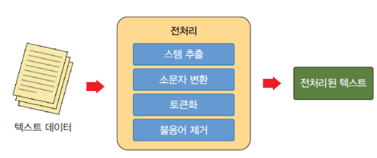
토큰화(tokenization)¶
- 말뭉치에 포함된 텍스트를 꺼내 토큰(token)이라 불리는 단위로 나누는 직업
- 한국어는 파생어가 많이 존재하기에(ex : 했고, 해서, 했으니, 했으므로 등) 토큰화에 어려움
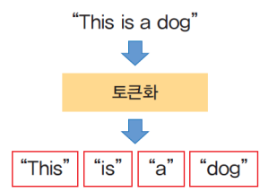
소문자 변환¶
- 영문에서 대문자를 소문자로 통합
- 대문자 단어를 소문자로 변경할 경우 단어의 개수 압축 가능
- 검색 시 "dog"와 "Dog"가 들어간 문서 모두 검색 가능
- 무조건 대문자를 소문자로 만들 수는 없음
- 미국을 나타내는 US != 우리라는 의미의 us
구두점 제거(정제)¶
- 토큰화의 결과에 구두점이 포함되어 있다면 삭제
- 일반적으로 구두점들은 자연어 처리에 도움 X
from nltk.tokenize import word_tokenize
tokens = word_tokenize("Hello World!, This is a dog.")
# 문자나 숫자인 경우에만 단어를 리스트에 추가
words = [word for word in tokens if word.isalpha()]
print(words)
# 출력
# ['Hello', 'World', 'This', 'is', 'a', 'dog']
불용어(StopWord)¶
- 자연어 처리 전 말뭉치에서 자연어 분석에 도움 되지 않는 토큰들 제거
- 문장에 많이 등장하지만 큰 의미 X
import nltk
nltk.download('punkt')
nltk.download('stopwords')
from nltk.corpus import stopwords
print(stopwords.words('english')[:20])
# 출력
# ['i', 'me', 'my', 'myself', 'we', 'our', 'ours',
# 'ourselves', 'you', "you're", "you've", "you'll",
# "you'd", 'your', 'yours', 'yourself', 'yourselves',
# 'he', 'him', 'his']
NLTK를 이용한 전처리¶
함수 word_tokenize() 사용¶
import nltk
nltk.download('punkt') # 1
from nltk.tokenize import word_tokenize # 2
text = "This is a dog." # 3
print(word_tokenize(text))
# 출력
# ['This', 'is', 'a', 'dog', '.']
함수 sent_tokenize() 사용¶
from nltk.tokenize import sent_tokenize # 1
text = "This is a house. This is a dog."
print(sent_tokenize(text)) # 2
# 출력
# ['This is a house.', 'This is a dog.']
Keras를 이용한 전처리¶
- 공백으로 단어 분할(split = " ")
- 구두점 필터링 (filters = ‘!”# $ % & () * +,-. / :; <=>? @ [\] ^ _`{|} ~ \ t\ n’)
- 텍스트를 소문자로 변환(lower = True)
from tensorflow.keras.preprocessing.text import *
print(text_to_word_sequence("This is a dog."))
# 출력
# ['this', 'is', 'a', 'dog']
단어의 표현¶
- 심층 신경망이 텍스트(언어)를 처리할 때 소화할 수 있는 방식
- 단어를 신경망에 제공
정수 인코딩¶
- 고유한 숫자를 사용하여 각 단어 인코딩
- 일반적으로 단어를 빈도순으로 정렬 후 빈도가 높은 단어부터 차례대로 번호 부여
- 예시
- 말뭉치에 단어 1000개가 있을 경우
- 각 단어에 1번 ~ 1000번까지의 번호(정수) 매핑
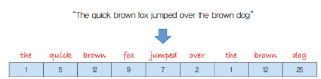
원-핫 인코딩(One-Hot Encoding)¶
- 원-핫(One-Hot) : 이진 벡터 중 하나만 1이고 나머지는 모두 0인 것
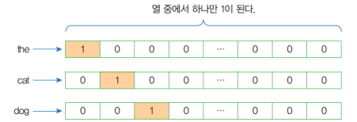
- 케라스 원-핫 인코딩
import numpy as np
from keras.utils import to_categorical
# 변환하고 싶은 텍스트
text = ["cat", "dog", "cat", "bird"]
# 단어 집합
total_pets = ["cat", "dog", "turtle", "fish", "bird"]
print("text=", text)
# 변환에 사용되는 딕셔너리 생성
mapping = {}
for x in range(len(total_pets)):
mapping[total_pets[x]] = x #“cat"->0, "dog"->1, ...
print(mapping)
# 매핑
# 단어들을 순차적인 정수 인덱스로 변환
for x in range(len(text)):
text[x] = mapping[text[x]]
print("text=", text)
# 순차적인 정수 인덱스를 원-핫 인코딩으로 변환
one_hot_encode = to_categorical(text)
print("text=", one_hot_encode)
# 출력
# text= ['cat', 'dog', 'cat', 'bird']
# {'cat': 0, 'dog': 1, 'turtle': 2, 'fish': 3, 'bird': 4}
# text= [0, 1, 0, 4]
# text= [[1. 0. 0. 0. 0.]
# [0. 1. 0. 0. 0.]
# [1. 0. 0. 0. 0.]
# [0. 0. 0. 0. 1.]]
-
원-핫 인코딩의 약점
-
비효율성
- 원-핫 인코딩된 벡터는 희소
- 즉 벡터의 대부분이 0
- ex)단어 집합에 10,000개의 단어가 있다고 가정하고 각 단어를 원-핫 인코딩할 경우
- 99.99%가 0인 벡터가 10,000개 생성
-
각 벡터들은 단어들 간의 유사도 표현 불가
워드 임베딩(Word Embedding)¶
- 하나의 밀집 벡터(dense vector)로 표현 방법
- 일반적으로 단어 표현 벡터들은 단어의 개수보다 차원이 작음
- 벡터들은 효율적이며 조밀함
- 임베딩 벡터들은 학습을 통해 훈련 데이터에서 자동으로 생성(신경망 주 사용)
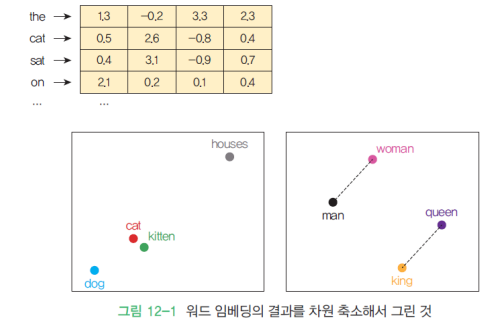
Word2vec¶
- 단어 임베딩의 일종
- 아래 다이어그램처럼 텍스트 말뭉치를 입력으로 받아들인 후 각 단어에 대한 벡터 표현 출력 알고리즘
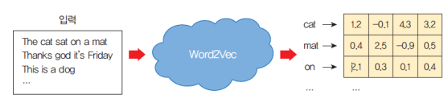
CBOW(Continuous Bag of Words) 모델¶
- 주변의 단어들을 통해 중간 단어 예측
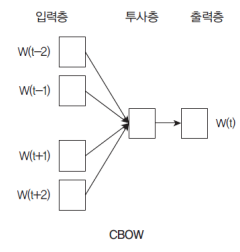
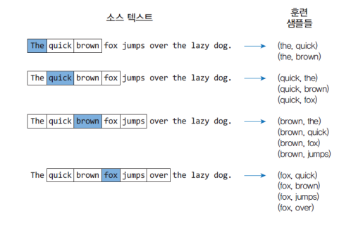
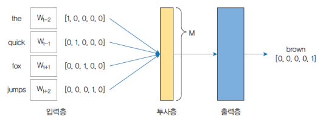
skipgram¶
- 중간의 단어로 주변 단어 예측
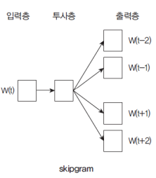
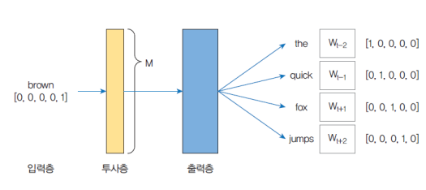
전처리와 토큰화¶
from tensorflow.keras.preprocessing.text import Tokenizer
t = Tokenizer()
text = """Deep learning is part of a broader family of machine learning methods
based on artificial neural networks with representation learning."""
t.fit_on_texts([text])
print("단어집합 : ", t.word_index)
# 출력
# 단어집합 : {'learning': 1, 'of': 2, 'deep': 3, 'is': 4, 'part': 5,
# 'a': 6, 'broader': 7, 'family': 8, 'machine': 9, 'methods': 10,
# 'based': 11, 'on': 12, 'artificial': 13, 'neural': 14,
# 'networks': 15, 'with': 16, 'representation': 17}
텍스트의 정수 인코딩¶
seq = t.texts_to_sequences([text])[0]
print(text,"->", seq)
# 출력
# Deep learning is part of a broader family of
# machine learning methods based on artificial neural
# networks with representation learning. -> [3, 1, 4, 5,
# 2, 6, 7, 8, 2, 9, 1, 10, 11, 12, 13, 14, 15, 16, 17, 1]
샘플의 패딩¶
- 샘플의 길이가 상이할 수 있음
- 텍스트를 문장 단위로 분리하여 신경망 훈련할 경우 많이 발생
- 패딩(padding) : 보통 숫자 0을 넣어 길이가 다른 샘플들의 길이를 맞추는 것
pad_sequence()¶
from tensorflow.keras.preprocessing.sequence import pad_sequences
X = pad_sequences([[7, 8, 9], [1, 2, 3, 4, 5], [7]],
maxlen=3, padding='pre')
print(X)
# 출력
# [[7 8 9]
# [3 4 5]
# [0 0 7]]
매개 변수¶
- sequences = 패딩이 수행되는 시퀀스 데이터
- maxlen = 샘플의 최대 길이
- padding = 'pre'이면 앞에 0을 채우고 'post'이면 뒤에 0 채움
케라스 Embedding 레이어¶
- 케라스는 텍스트 데이터를 처리하는 신경망에 사용 가능한 Embedding 레이어 제공
- Embedding 레이어의 입력 데이터는 정수 인코딩되어 각 단어가 고유한 정수로 표현
-
input_dim
-
텍스트 데이터의 어휘 크기
-
ex) 데이터가 0~9 사이의 값으로 정수 인코딩된 경우 어휘의 크기는 10 단어
-
output_dim
-
단어가 표현되는 벡터 공간의 크기
- 각 단어에 대해 레이어의 출력 벡터 크기 정의
-
ex) 32 또는 100 이상
-
input_length
-
입력 시퀀스의 길이
-
ex) 모든 입력 문서가 100개의 단어로 구성되어 있을 경우 100
-
입력 형태
-
2D 텐서 (batch_size, sequence_length)의 형태
-
정수 인코딩 형태이어야 하는 정수의 시퀀스
-
출력 형태
- 3D 텐서 (batch_size, sequence_length, output_dim)의 형태
예제¶
import numpy as np
from tensorflow.keras.layers import Embedding
from tensorflow.keras.models import Sequential
# 입력 형태: (batch_size, input_length)=(32, 3)
# 출력 형태: (None, 3, 4)
model = Sequential()
model.add(Embedding(100, 4, input_length=3))
input_array = np.random.randint(100, size=(32, 3))
model.compile('rmsprop', 'mse')
output_array = model.predict(input_array)
print(output_array.shape)
# 출력
# (32, 3, 4)
- 출력 결과
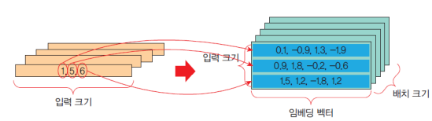
2절. 예제¶
스팸 메일 분류 예제¶
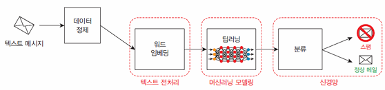
import numpyas np
from tensorflow.keras.layersimport Embedding, Flatten, Dense
from tensorflow.keras.modelsimport Sequential
from tensorflow.keras.preprocessing.textimport one_hot
from tensorflow.keras.preprocessing.sequenceimport pad_sequences
docs = [ 'additional income',
'best price',
'big bucks',
'cash bonus',
'earn extra cash',
'spring savings certificate',
'valerogas marketing',
'all domestic employees',
'nominations for oct',
'confirmation from spinner']
# 앞의 5개 : 스팸 / 뒤의 5개 : 정상
# 원-핫 인코딩
labels = np.array([1,1,1,1,1,0,0,0,0,0])
vocab_size = 50
encoded_docs = [one_hot(d, vocab_size) for d in docs]
print(encoded_docs)
# 출력
# [[30, 24], [30, 29], [1, 9], [49, 46], [29, 47, 49],
# [23, 39, 47], [14, 20, 31], [17,22, 3],
# [42, 25, 37], [41, 5, 9]]
# 패딩 과정 : 4개 패딩(post : 마지막)
max_length = 4
padded_docs = pad_sequences(encoded_docs, maxlen=max_length,
padding='post')
print(padded_docs)
# 출력
# [[30 24 0 0]
# [30 29 0 0]
# [ 1 9 0 0]
# [49 46 0 0]
# [29 47 49 0]
# [23 39 47 0]
# [14 20 31 0]
# [17 22 3 0]
# [42 25 37 0]
# [41 5 9 0]]
model = Sequential()
model.add(Embedding(vocab_size, 8, input_length=max_length))
model.add(Flatten())
model.add(Dense(1, activation='sigmoid'))
model.compile(optimizer='adam',
loss='binary_crossentropy',
metrics=['accuracy'])
model.fit(padded_docs, labels, epochs=50, verbose=0)
loss, accuracy = model.evaluate(padded_docs, labels, verbose=0)
print('정확도=', accuracy)
# 출력
# 정확도 = 1.0
# 테스트
test_doc = ['big income']
encoded_docs = [one_hot(d, vocab_size) for d in test_doc]
padded_docs = pad_sequences(encoded_docs,
maxlen = max_length, padding = 'post')
print(model.predict(padded_docs))
# 출력
# [[0.5746514]]
다음 단어 예측 예제¶
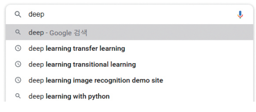
- 구글 or 네이버 검색 시 사용
- 노래 가사의 짧은 단어 시퀀스로부터 추출하며 학습 후 예측 확인
import numpy as np
from tensorflow.keras.layers import Embedding, Flatten, Dense
from tensorflow.keras.models import Sequential
from tensorflow.keras.preprocessing.text import one_hot
from tensorflow.keras.preprocessing.sequence import pad_sequences
from tensorflow.keras.preprocessing.text import Tokenizer
from tensorflow.keras.utils import to_categorical
text_data = """Soft as the voice of an angel\n
Breathing a lesson unhead\n
Hope with a gentle persuasion\n
Whispers her comforting word\n
Wait till the darkness is over\n
Wait till the tempest is done\n
Hope for sunshine tomorrow\n
After the shower"""
tokenizer = Tokenizer()
tokenizer.fit_on_texts([text_data])
encoded = tokenizer.texts_to_sequences([text_data])[0]
print(encoded)
# 출력(숫자 인덱스로의 변환)
# [7, 8, 1, 9, 10, 11, 12, 13, 2, 14, 15, 3,
# 16, 2, 17, 18, 19, 20, 21, 22, 4, 5, 1, 23,
# 6, 24, 4, 5, 1, 25, 6, 26, 3, 27, 28, 29, 30, 1, 31]
print(tokenizer.word_index)
# 츨력(딕셔너리로의 변환)
# {'the': 1, 'a': 2, 'hope': 3, 'wait': 4, 'till': 5,
# 'is': 6, 'soft': 7, 'as': 8, 'voice': 9, 'of': 10, 'an': 11,
# 'angel': 12, 'breathing': 13, 'lesson': 14, 'unhead': 15,
# 'with': 16, 'gentle': 17, 'persuasion': 18, 'whispers': 19,
# 'her': 20,'comforting': 21, 'word': 22, 'darkness': 23,
# 'over': 24, 'tempest': 25, 'done': 26, 'for': 27,
# 'sunshine': 28, 'tomorrow': 29, 'after': 30, 'shower': 31}
vocab_size = len(tokenizer.word_index) + 1
print('어휘 크기: %d' % vocab_size)
# 출력
# 어휘 크기 : 32
sequences = list()
for i in range(1, len(encoded)):
sequence = encoded[i-1:i+1]
sequences.append(sequence)
print(sequences)
print('총 시퀀스 개수 : %d' % len(sequences))
# 출력(다음부분의 시퀀스)
# [[7, 8], [8, 1], [1, 9], [9, 10], [10, 11], [11, 12],
# [12, 13], [13, 2], [2, 14], [14, 15], [15, 3], [3, 16],
# [16, 2], [2, 17], [17, 18], [18, 19], [19, 20], [20, 21],
# [21, 22], [22, 4], [4, 5], [5, 1], [1, 23], [23, 6], [6, 24],
# [24, 4], [4, 5], [5, 1], [1, 25], [25, 6], [6, 26], [26, 3],
# [3, 27], [27, 28], [28, 29], [29, 30], [30, 1], [1, 31]]
# 총 시퀀스 개수 : 38
sequences = np.array(sequences)
X, y = sequences[:,0],sequences[:,1]
print("X=", X)
print("y=", y)
# 출력
# X= [ 7 8 1 9 10 11 12 13 2 14 15 3 16 2 17 18 19
# 20 21 22 4 5 1 23 6 24 4 5 1 25 6 26 3 27 28 29 30 1]
# y= [ 8 1 9 10 11 12 13 2 14 15 3 16 2 17 18 19 20
# 21 22 4 5 1 23 6 24 4 5 1 25 6 26 3 27 28 29 30 1 31]
# 신경망 모델 정의
from tensorflow.keras.models import Sequential
from tensorflow.keras.layers import Embedding, Dense, SimpleRNN, LSTM
model = Sequential()
model.add(Embedding(vocab_size, 10, input_length=1))
model.add(LSTM(50))
model.add(Dense(vocab_size, activation='softmax'))
model.compile(loss='sparse_categorical_crossentropy',
optimizer='adam',
metrics=['accuracy'])
model.fit(X, y, epochs=500, verbose=2)
# 출력
# ...
# Epoch 500/500 2/2 - 0s - loss: 0.3053 - accuracy: 0.8421
# 테스트 단어 정수 인코딩
test_text = 'Wait'
encoded = tokenizer.texts_to_sequences([test_text])[0]
encoded = np.array(encoded)
# 신경망의 예측값 출력
onehot_output = model.predict(encoded)
print('onehot_output=', onehot_output)
# 출력
# onehot_output= [[5.6587060e-06 4.0273936e-03 6.2348531e-03
# 8.6066285e-03 1.5018744e-05 9.7867030e-01 6.0064325e-05
# 5.6844797e-06 1.7885073e-05 8.7188082e-06 3.1823198e-05
# 2.8105886e-04 3.3933269e-05 1.3699831e-06 3.2279258e-06
# 7.1233828e-08 2.3057231e-05 3.4311252e-06 1.0358917e-05
# 7.9929187e-08 1.4642384e-04 1.2234473e-06 1.0129405e-04
# 1.5086286e-05 8.9766763e-06 8.6069404e-06 9.3199278e-06
# 3.4068940e-05 2.0460826e-08 1.5851222e-03 3.8524475e-05
# 1.0519097e-05]]
# 가장 높은 출력 유닛
output = np.argmax(onehot_output)
print('output =', output)
# 출력
# output = [5]
# 출력층 유닛 번호의 단어화
print(test_text, "=>", end=" ")
for word, index in tokenizer.word_index.items():
if index == output:
print(word)
# 출력
# Wait => till
영화 리뷰 감성 판별 예제(분류 문제)¶
- 데이터를 imdb.load_data() 함수를 통해 바로 다운로드
# 라이브러리
import numpy as np
import tensorflow as tf
from tensorflow import keras
import matplotlib.pyplot as plt
# 데이터 다운로드
imdb = keras.datasets.imdb
(x_train, y_train), (x_test, y_test) =
imdb.load_data(num_words=10000)
print(x_train[0])
# 출력(각 25000개의 데이터)
# [1, 14, 22, 16, 43, 530, 973, 1622, 1385, 65, 458,
# 4468, 66, 3941, 4, 173, 36, 256, ... ,32]
# 리뷰 복원
# 단어 -> 정수 인덱스 딕셔너리
word_to_index = imdb.get_word_index()
# 처음 몇 개의 인덱스는 특수 용도로 사용
word_to_index = {k:(v+3) for k,v in word_to_index.items()}
word_to_index["<PAD>"] = 0 # 문장 채우는 기호
word_to_index["<START>"] = 1 # 시작 표시
word_to_index["<UNK>"] = 2 # 알려지지 않은 토큰
word_to_index["<UNUSED>"] = 3
index_to_word = dict([(value, key) for (key, value)
in word_to_index.items()])
print(' '.join([index_to_word[index] for index in x_train[0]]))
# 출력
# START this film was just brilliant casting
# location scenery story direction everyone's
# really suited the part they played and you could
# just imagine being there robert redford's is an
# amazing actor and ... the whole story was so lovely
# because it was true and was someone's life after all
# that was shared with us all
# 전처리
from tensorflow.keras.preprocessing.sequence import pad_sequences
from tensorflow.keras.models import Sequential
from tensorflow.keras.layers import *
x_train = pad_sequences(x_train, maxlen = 100)
x_test = pad_sequences(x_test, maxlen = 100)
vocab_size = 10000
# 신경망 구축
model = Sequential()
model.add(Embedding(vocab_size, output_dim = 64,
input_length = 100))
model.add(Flatten())
model.add(Dense(64, activation='relu'))
model.add(Dropout(0.5))
model.add(Dense(1, activation='sigmoid'))
model.summary()
# 출력
# ...
# embedding_3 (Embedding) (None, 100, 64) 640000
# vocab_size * output_dim = 640000
# ...
# flatten_2 (Flatten) (None, 6400) 0
# dense_3 (Dense) (None, 64) 409664(64 * 6400 + 64)
# dense_4 (Dense) (None, 1) 65
# ...
# Total params: 1,049,729(640000 + 409664 + 65)
# 모델 컴파일
model.compile(loss='binary_crossentropy',
optimizer='adam',
metrics=['accuracy'])
history = model.fit(x_train, y_train, batch_size=64,
epochs=20, verbose=1, validation_data=(x_test, y_test))
# 출력
# ...
# - loss: 0.0417 - accuracy: 0.9924
# - val_loss: 0.9395 - val_accuracy: 0.8077
# 모델 평가
results = model.evaluate(x_test, y_test, verbose=2)
print(results)
# 출력
# 782/782 - 1s - loss: 0.9395 - accuracy: 0.8077
# [0.93949955701828, 0.8076800107955933]